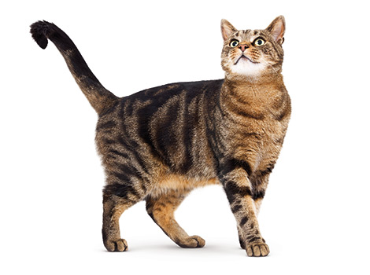
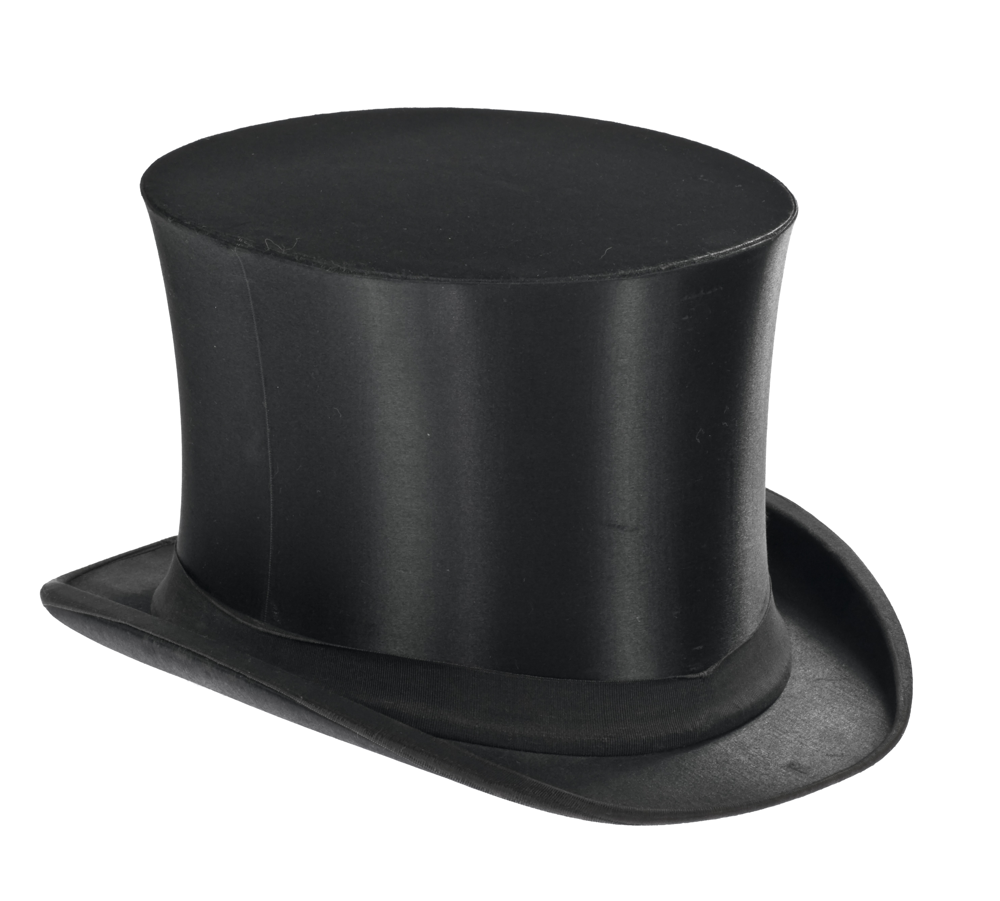

<script>
  var cat = document.querySelector("#cat");
  var hat = document.querySelector("#hat");
  var angle = 0, lastTime = null;
  
  function animate(time) {
  
    if (lastTime != null){
      angle += (time - lastTime) * 0.001;
	}
    
    lastTime = time;
    var offsetX = 200;
    var offsetY = 200;
    
    cat.style.top = (Math.sin(angle) * 20) + offsetY + "px";
    cat.style.left = (Math.cos(angle) * 200) + offsetX + "px";
    
    hat.style.top = (Math.sin(angle ) * 20) + offsetY + "px";
    hat.style.left = (Math.cos(angle + 3.14159) * 200) + offsetX + "px";
    
    requestAnimationFrame(animate);
  }
  
  requestAnimationFrame(animate);
</script>
